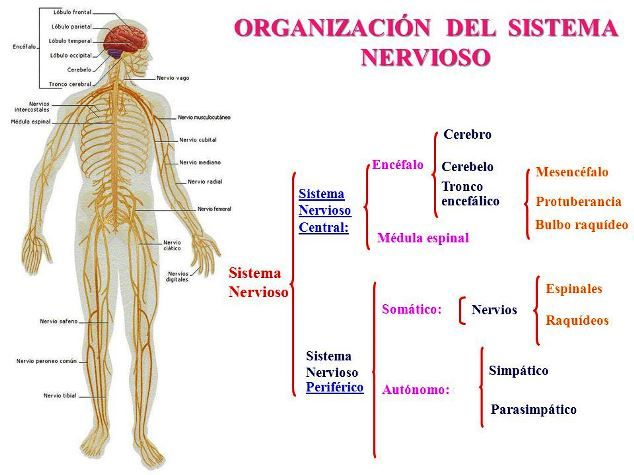
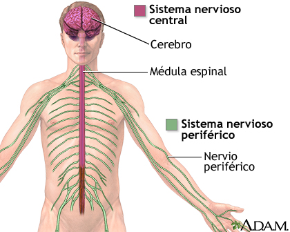
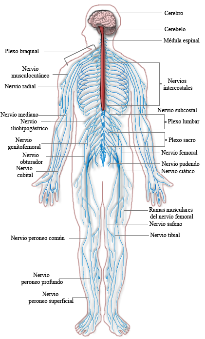
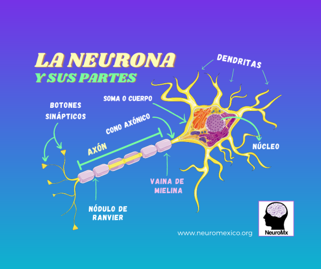
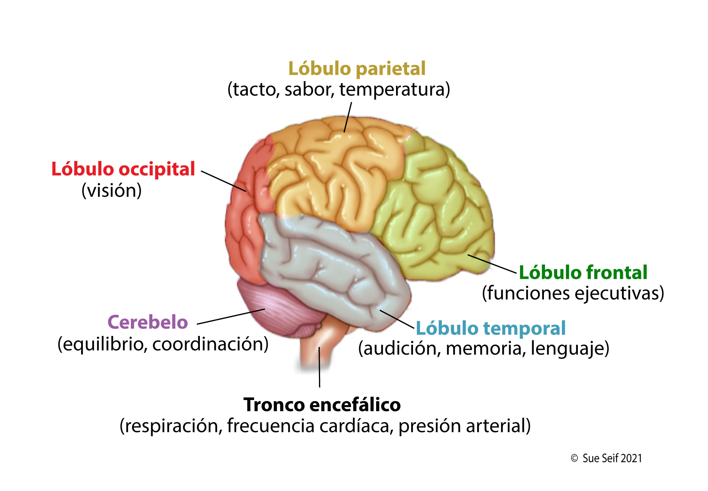
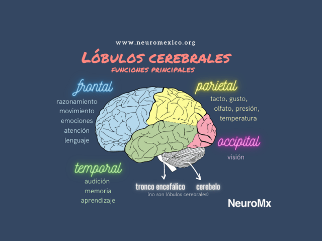

🧠 ¿Qué es el Sistema Nervioso?
El sistema nervioso es el sistema de comunicación y control del cuerpo humano. Es como una red eléctrica de alta velocidad que conecta el cerebro con cada rincón del organismo, permitiendo que pensemos, sintamos, nos movamos y reaccionemos ante el entorno en milisegundos.
Está compuesto por miles de millones de neuronas (células especializadas) que transmiten señales eléctricas y químicas. Gracias a este sistema, puedes leer esta página, respirar sin pensar, sentir el calor del sol y recordar lo que desayunaste esta mañana.
🎯 Objetivos de Aprendizaje
Al finalizar este tema serás capaz de: describir las partes del sistema nervioso central y periférico, explicar la estructura y función de la neurona, identificar las funciones de los lóbulos cerebrales, comprender el mecanismo de la sinapsis, y diferenciar entre respuestas voluntarias e involuntarias.
🗺️ Anatomía del Sistema Nervioso
El sistema nervioso se divide en dos grandes subsistemas que trabajan en conjunto: el sistema nervioso central (SNC), que procesa la información, y el sistema nervioso periférico (SNP), que la transporta hacia y desde el SNC.

Figura 1: Organización general del sistema nervioso humano. Fuente: Neurocirugía Equipo de la Torre.

Figura 2: SNC (rosa) y SNP (verde) con sus componentes principales. Fuente: MedlinePlus.
🧠 Sistema Nervioso Central (SNC)
- Cerebro: Controla funciones superiores: pensamiento, memoria, emociones, lenguaje.
- Cerebelo: Coordina el equilibrio, la postura y los movimientos finos.
- Tronco encefálico: Regula funciones vitales: respiración, frecuencia cardíaca, presión arterial.
- Médula espinal: Cable de comunicación entre cerebro y cuerpo; reflejos rápidos.
🔗 Sistema Nervioso Periférico (SNP)
- Nervios craneales: 12 pares que conectan el cerebro con cabeza, cuello y tronco.
- Nervios espinales: 31 pares que emergen de la médula espinal hacia el resto del cuerpo.
- Ganglios: Grupos de cuerpos neuronales fuera del SNC.
- SNP somático: Controla músculos esqueléticos (voluntario).
- SNP autónomo: Controla órganos internos (involuntario): simpático y parasimpático.

Figura 3: Sistema nervioso completo con nervios craneales, espinales y plexos. Fuente: Wikipedia.
⚡ La Neurona: La Célula de la Comunicación
La neurona es la unidad básica del sistema nervioso. El cerebro humano contiene aproximadamente 86,000 millones de neuronas, cada una conectada con otras miles de neuronas a través de sinapsis. Son las células más especializadas del cuerpo.

Figura 4: Partes de una neurona con dirección del impulso nervioso. Fuente: NICHD.

Figura 5: Estructura detallada de la neurona con etiquetas en español. Fuente: NeuroMéxico.
Partes de la Neurona
🌿 Dendritas
Ramas que reciben señales de otras neuronas. Aumentan la superficie de contacto. Pueden tener miles de dendritas.
🏠 Soma (Cuerpo Celular)
Contiene el núcleo y organelos. Procesa la información recibida. Decide si genera o no un impulso.
📡 Axón
Fibra larga que transmite el impulso hacia otras neuronas. Puede medir hasta 1 metro (neuronas de la pierna).
🧤 Vaina de Mielina
Capa grasa que aísla el axón y acelera la transmisión. Formada por células de Schwann (SNP) u oligodendrocitos (SNC).
Tipos de Neuronas
| Tipo | Función | Ejemplo |
|---|---|---|
| Sensitivas (Aferentes) | Transmiten información del cuerpo al SNC | Neuronas de la piel que detectan temperatura |
| Motoras (Eferentes) | Llevan órdenes del SNC a músculos y glándulas | Neuronas que activan el bíceps |
| Interneuronas | Conectan neuronas entre sí dentro del SNC | Neuronas de la médula espinal en reflejos |
¿Sabías que...?
La vaina de mielina hace que los impulsos nerviosos viajen hasta 120 metros por segundo (432 km/h). Sin mielina, la velocidad cae a solo 0.5-10 m/s. La esclerosis múltiple es una enfermedad autoinmune que destruye esta vaina, causando fallas en la comunicación nerviosa.
🔗 La Sinapsis: El Puente entre Neuronas
La sinapsis es la unión entre dos neuronas (o entre una neurona y una célula efectora, como un músculo). Es un espacio microscópico (20-40 nanómetros) donde la señal eléctrica se convierte en química y luego vuelve a ser eléctrica. No hay contacto físico directo.
⚡ Llegada del Impulso
Un impulso eléctrico (potencial de acción) llega al botón sináptico (extremo del axón). Esto abre canales de calcio en la membrana.
💊 Liberación de Neurotransmisores
El calcio provoca la fusión de vesículas sinápticas con la membrana, liberando neurotransmisores (moléculas mensajeras) en la hendidura sináptica.
🔑 Unión a Receptores
Los neurotransmisores se unen a receptores en la membrana postsináptica (dendrita de la siguiente neurona), abriendo canales iónicos.
🔄 Generación de Nueva Señal
La entrada de iones genera un nuevo potencial de acción en la neurona postsináptica. Los neurotransmisores son reciclados o degradados.
🧪 Neurotransmisores Principales
Dopamina: Placer, motivación, movimiento. Su déficit causa Parkinson.
Serotonina: Estado de ánimo, sueño, apetito. Relacionada con la depresión.
Acetilcolina: Memoria, contracción muscular. Bloqueada por veneno de curare.
Adrenalina (epinefrina): Respuesta de lucha o huida. Acelera corazón y dilata pupilas.
GABA: Principal neurotransmisor inhibidor. Relaja al cerebro; su déficit causa ansiedad.
¿Sabías que...?
Una sola neurona puede formar hasta 10,000 sinapsis con otras neuronas. El cerebro humano tiene aproximadamente 100 billones de sinapsis. Si contaras una sinapsis por segundo, tardarías 3 millones de años en contarlas todas.
🧠 El Cerebro: El Centro de Mando
El cerebro pesa aproximadamente 1.4 kg (el 2% del peso corporal), pero consume el 20% de la energía y el 25% del oxígeno del cuerpo. Está dividido en dos hemisferios (izquierdo y derecho) conectados por el cuerpo calloso, una banda de 200 millones de axones.

Figura 6: Lóbulos cerebrales y sus funciones principales. Fuente: OncoLink.

Figura 7: Funciones de los lóbulos cerebrales y estructuras subcorticales. Fuente: NeuroMéxico.
Lóbulos Cerebrales y sus Funciones
| Lóbulo | Ubicación | Funciones Principales |
|---|---|---|
| Frontal | Parte anterior | Razonamiento, planificación, personalidad, movimiento voluntario, lenguaje (área de Broca) |
| Parietal | Parte superior/media | Tacto, temperatura, dolor, presión, percepción espacial, lenguaje (área de Wernicke) |
| Temporal | Laterales | Audición, memoria, aprendizaje, reconocimiento de rostros, emociones |
| Occipital | Parte posterior | Procesamiento visual: color, forma, movimiento, profundidad |
Estructuras Subcorticales
🧠 Cerebelo
"Cerebro pequeño". Coordina movimientos, equilibrio y postura. Contiene la mitad de las neuronas del cerebro.
🌉 Tronco Encefálico
Conecta cerebro y médula. Controla funciones vitales: respiración, ritmo cardíaco, sueño, conciencia.
🎯 Hipotálamo
Regula temperatura, hambre, sed, sueño y emociones. Controla la hipófisis (glándula maestra).
🍇 Amígdala
Centro del miedo y las emociones. Activa la respuesta de lucha o huida ante peligros.
¿Sabías que...?
El cerebro de Einstein fue preservado después de su muerte. Se descubrió que tenía un cuerpo calloso más grueso de lo normal y más células gliales (células de soporte) en el área parietal izquierda, relacionada con el pensamiento matemático. Sin embargo, su cerebro pesaba 1,230 gramos —dentro del promedio— demostrando que el tamaño no determina la inteligencia.
⚡ Reflejos y Sistema Nervioso Autónomo
No todas las respuestas del sistema nervioso pasan por el cerebro. Los reflejos son respuestas rápidas y automáticas que ocurren en la médula espinal, protegiéndonos de daños antes de que el cerebro procese la información.
🦵 El Arco Reflejo: Ejemplo del Reflejo Patelar
1. Golpe en el tendón rotuliano → 2. Receptor sensorial activado → 3. Señal viaja por neurona sensitiva a la médula espinal → 4. Interneurona conecta con neurona motora → 5. Neurona motora activa el cuádriceps → 6. Pierna se extiende. Todo en ~50 milisegundos, sin intervención cerebral.
Sistema Nervioso Autónomo (SNP involuntario)
Controla funciones automáticas: latido cardíaco, digestión, sudoración, dilatación pupilar. Tiene dos divisiones que actúan como acelerador y freno:
🔴 Simpático ("Lucha o Huida")
- Acelera el corazón y la respiración
- Dilata las pupilas
- Inhibe la digestión
- Libera adrenalina
- Aumenta el flujo sanguíneo a músculos
- Se activa en situaciones de estrés o peligro
🔵 Parasimpático ("Descanso y Digestión")
- Ralentiza el corazón
- Contrae las pupilas
- Estimula la digestión
- Promueve la relajación
- Estimula la micción y defecación
- Se activa en momentos de calma
¿Sabías que...?
El reflejo de estornudo es tan potente que puede alcanzar velocidades de 160 km/h y expulsar gotas a más de 2 metros. Por eso cubrirse al estornudar es crucial para evitar la propagación de enfermedades. Curiosamente, es casi imposible estornudar con los ojos abiertos —el cierre es un reflejo involuntario.
⚠️ Trastornos del Sistema Nervioso
Conocer los trastornos neurológicos más comunes nos ayuda a comprender la fragilidad y complejidad de este sistema, y a valorar la importancia de hábitos saludables para su protección.
| Trastorno | Descripción | Síntomas Principales |
|---|---|---|
| Alzheimer | Enfermedad neurodegenerativa que destruye neuronas y sinapsis | Pérdida de memoria, confusión, cambios de personalidad |
| Parkinson | Degeneración de neuronas dopaminérgicas en la sustancia negra | Temblor, rigidez, lentitud de movimiento, inestabilidad postural |
| Epilepsia | Actividad eléctrica cerebral anormal y recurrente | Convulsiones, pérdida de conciencia, movimientos involuntarios |
| Esclerosis Múltiple | Autoinmune que destruye la vaina de mielina del SNC | Fatiga, problemas de visión, debilidad muscular, mareos |
| Accidente Cerebrovascular (ACV) | Interrupción del flujo sanguíneo a una parte del cerebro | Parálisis facial, dificultad para hablar, visión borrosa, dolor de cabeza |
| Migraña | Trastorno neurológico con cambios en el flujo sanguíneo cerebral | Dolor de cabeza intenso, náuseas, sensibilidad a la luz y sonido |
🧠 Cómo Cuidar tu Cerebro
Dormir 7-9 horas: El cerebro se "limpia" durante el sueño, eliminando proteínas tóxicas.
Ejercicio regular: Aumenta el flujo sanguíneo cerebral y estimula neurogénesis.
Alimentación: Omega-3 (pescado), antioxidantes (frutas), vitamina B.
Aprender cosas nuevas: Estimula la plasticidad sináptica y crea reservas cognitivas.
Socialización: Reduce el riesgo de demencia y mejora el estado de ánimo.
🤯 Datos Curiosos sobre tu Cerebro
¿Sabías que...?
Tu cerebro genera aproximadamente 23 vatios de potencia cuando estás despierto —suficiente para encender una bombilla pequeña. Aunque pesa solo el 2% de tu cuerpo, consume el 20% de tu energía y oxígeno.
¿Sabías que...?
El cerebro no siente dolor. No tiene receptores de dolor (nociceptores). Por eso pueden operar el cerebro con el paciente despierto. El dolor de cabeza proviene de los vasos sanguíneos, meninges y músculos del cuero cabelludo, no del cerebro mismo.
¿Sabías que...?
La plasticidad cerebral permite que el cerebro se reconfigure durante toda la vida. Después de una lesión, otras áreas pueden asumir funciones perdidas. Los músicos que comienzan a practicar antes de los 7 años tienen un cuerpo calloso un 15% más grueso que los no músicos.
¿Sabías que...?
El 90% de las decisiones que tomas cada día son inconscientes. Tu cerebro procesa aproximadamente 11 millones de bits de información por segundo, pero solo eres consciente de unos 50 bits. El resto lo maneja el cerebro en "modo automático".
📝 Verifica tu Aprendizaje
Responde estas preguntas para comprobar lo que has aprendido. (Las respuestas se mostrarán al hacer clic)